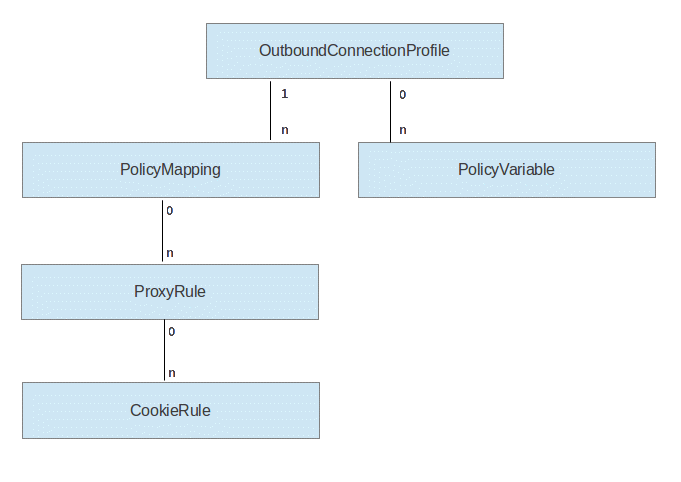

The OutboundConnectionProfile items are the elements of the configuration model. The following profiles can exist:
System profile: This profile is reserved for configuration settings that are used by the system internally. A portal configuration contains exactly one system profile.
Global profile: This profile contains all global configuration settings. These settings are maintained by the Portal administrator. In contrast to settings in application-scoped profiles, Policy Mappings, Proxy Rules and Cookie Rules that are defined in the global profile are available to all applications that use the Outbound Connection service. A portal configuration contains zero or one global profile.
Application-scoped profile: Application scoped profile settings are valid in the scope of a certain web module. The application for which this profile is scoped is determined by the context root of the web module deployment descriptor. If, for example, the deployment descriptor of the webmodule bannerad.war contains the context root setting "/wps/PA_Banner_Ad", connection profile that should be scoped for this webmodule, only should contain "/wps/PA_Banner_Ad" as scope reference.
An OutboundConnectionProfile item contains the following settings:
application scope reference: This setting is set null for the system profile and the application profile. For application-scoped profiles, the scope reference identifies the application for which this profile belongs. The scope reference contains the context root setting of the application. This information can be located in several ways:
If the referenced application is a portlet application, then login to WebSphere Portal using the portal administrator user. Select Administration -> "Web modules".
In the Manage Web Modules portlet, Click "Select Web Module Properties" for the requested web module. The Web module properties view lists the context root (for example, /wps/PA_Banner_Ad).
Alternatively, the context root of an application can be determined using the WAS administration console. Select the Enterprise Application that you want to refer, then click "View Deployment Descriptor". Locate the <context-root> tag and take the value of this tag as scope reference value.
Policy mappings have two purposes:
When an Outbound HTTP Connection is established via the OutboundConnectionService, the caller can specify the mapping context in an optional parameter. In the following code example, an outbound connection service object is created, using the Policy Mapping context path "/mycontext":
String theMappingContextPath = "/mycontext";
OutboundConnectionServiceHome home = (OutboundConnectionServiceHome) ctx.lookup("portal:service/model/OutboundConnectionService");
OutboundConnectionService connectionService = home.getOutboundConnectionService (request, Response, theMappingContextPath);
If the connection is established through the AJAX proxy, mapping context root is used as context root for the proxy: http://localhost:10039/wps/mycontext/(...encoded remote url ...);
An Outbound connection profile contains at least one Policy Mapping item. This item is created at the point of time when the Outbound Connection Profile element is created. This default Policy Mapping does not have a context path. That is, policy rules that are defined in the default Policy Mapping are always accessible to outbound HTTP connection filters, independent of the context for which the connection has been created. That means, given the example above, the following proxy rules are available for the connection:
Policy rules specify handling rules for outbound HTTP connections. Policy Rules are identified by a URL pattern, which is compared against the URL of an Outbound HTTP connection being opened.
A Policy rule contains the following settings:
URL pattern: Policy rules are identified by their URL patterns. If an Outbound HTTP Connection to a certain URL is connected, the Outbound HTTP Connection service checks the URL patterns of all Policy Rule items which are in the accessible Policy mappings. The policy Rule with the best-matching URL pattern is selected.
basicAuth: This setting indicates if the connection that is defined by this policy rule is protected by a basicAuth authentication. If this setting is true,
active: A flag that indicates if this rule is active or not.
A set of Allowed Methods: A policy rule can contain a set of allowed HTTP methods. This list restricts the HTTP methods for which a URL connection is restricted.
If, for example, the set of allowed methods is (GET, POST) , then only GET and POST requests are allowed for the URLs that are controlled by this Policy rule. If a policy rule does not contain a list of allowed methods, then all HTTP methods are permitted.
A set of Mime Types: A policy rule can contain a set of Mime Types, which restricts the allowed mime type of the content being received. For example, the set (text/html, text/plain) restricts Outbound HTTP connections to content that is either plain text or HTML output. If no list of supported mime types if given, then Outbound HTTP connections are not restricted to certain mime types.
A set of Headers: A policy rule can restrict the outbound connection to a set of request headers
A custom chain of URL Connection filters:The built-in chain of URL connection filters can be overridden by this parameter.
Cookie rules define handling rules for cookies by the Outbound HTTP Connection service. Cookies are set by the remote server, using the Set-Cookie: response header setting. The Cookie rules determine the handling of a created cookie. The Cookie Rule is responsible to define how this cookie should be treated. Cookie rule definitions are owned by policy rules. That means, each policy rule defines individually, how to handle cookies that are set in Outbound HTTP connections.
A Cookie Rule contains the following settings:
Cookie names:
A set of wildcard expressions that contain names or name patterns of cookies. For example, the
cookie rule with the name "LtpaToken*" applies for both LtpaToken and LtpaToken2.
A cookie Rule is owned by a Proxy rule, which means, that a cookie rule is applied if
PolicyVariables are variables that are used in the urlPattern setting of a Proxy Rule item. They are used to resolve tokens of the form {$Variable_name} (where Variable_Name is for a variable) that can appear in the URL Pattern setting of a proxy rule.
There are two types of variables:
Endpoint Variables define a single-value variable. They are typically used to define a specific backend host. Using endpoint variables, the application developer can write a policy rule in a way that it extracts those parts of the URL pattern in a variable, which are specific to the particular portal environment.
Example:
The portlet developer defines a Proxy Rule with the following url pattern setting: "{$my_server}/mymail*". That means, the resulting URL pattern is the value of the policy variable, appended with the path "/mymail".
The portal system administrator defines the value "http://www.the-remote-system.com" for the variable my_server. That means, the URL pattern of the Policy Rule is
"http://www.the-remote-system.com/mymail".
The benefit of this technique is to split a URL pattern into parts that are owned by the Portlet Developer, and parts that are owned by the Portal System administrator. The Portlet Developer usuallycan define a policy rule without knowing the concrete host name of the backend system to which the outbound connection is established.
Dynamic Policy Variables can have multiple values. The purpose of this variable type is to define dynamic parts of the URL pattern, without having the need to specify a policy rule multiple times.
Example:
A Policy Rule URL pattern has the following url pattern setting:
"http://localhost/wps/{$my_dynamic_policy}/Main/*". The variable my_dynamic_policy is associated with the values "portal" and "myportal". The result is that the Policy rules is applicable for URLs that start with http://localhost/wps/portal/Main/ and http://localhost/wps/myportal/Main/
The purpose of this technique is to make one policy rule available for multiple URL patterns that may contain dynamic parts.
Policy variables can be mixed and nested. For example, it is allowed to specify the name of a policy variable as a value of a policy variable. Also, it is allowed to specify multiple policy variables in one URL pattern.
Example:
This is a more complex example of a url patterns that uses multiple policy rules.
name=PROTOCOL
type=Dynamic Policy
Values= http, https
name = CONTEXT_ROOT
type = Dynamic Policy
Values = wps/portal, wps/myportal
name=HOSTNAME
type=Endpoint
Value={$PROTOCOL}://www.my-remote-server.com
The URL pattern of the policy rule has the following value:
{$HOSTNAME}/{$CONTEXT_ROOT}/Mail*
The URL pattern is applicable for URLs that mathc with the following patterns:
http://www.my-remote-server.com/wps/portal
http://www.my-remote-server.com/wps/myportal
https://www.my-remote-server.com/wps/portal
https://www.my-remote-server.com/wps/myportal